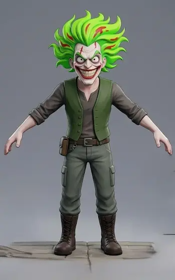
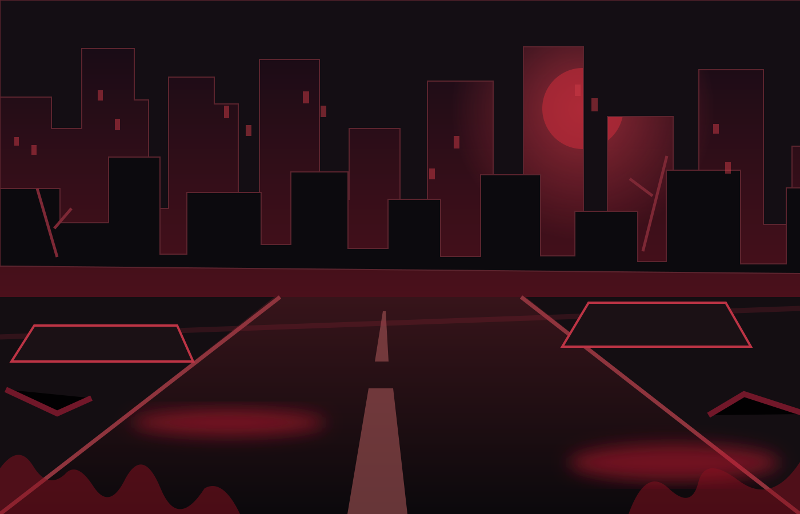

La última avenida
El corredor aparece solo en una ciudad urbana distópica. Los edificios se levantan sobre calles abandonadas y las señales de alarma anuncian que la zona ya no es segura.
EXPEDIENTE 001 / UNITY WEBGL / ENDLESS RUNNER 3D
CORRE. ESQUIVA. SOBREVIVE.
Las calles están vacías. Las luces se apagan. Y el peligro nunca deja de perseguirte. Una carrera interminable por una ciudad distópica al borde del colapso.

Una historia de supervivencia entre avenidas desiertas, luces rojas y una amenaza que se acerca con cada segundo.

ARCHIVO VISUAL // SECTOR CEROEl corredor aparece solo en una ciudad urbana distópica. Los edificios se levantan sobre calles abandonadas y las señales de alarma anuncian que la zona ya no es segura.
Su única opción es avanzar. Barricadas, cajas y estructuras elevadas surgen inesperadamente en el camino. Cada obstáculo exige una reacción inmediata.
La carrera se acelera; esquivar se vuelve más difícil. El objetivo es sobrevivir el mayor tiempo posible, acumular puntos y superar el récord.
Si se agotan las vidas, la carrera termina. Si el corredor resiste, su puntuación seguirá creciendo y podrá marcar una nueva hazaña.
Un corredor imposible de confundir: una sonrisa perturbadora, cabello verde eléctrico y el instinto de seguir adelante.
Un personaje de estética Cartoon 3D que contrasta con la oscuridad del escenario. Su cabellera verde, el rostro expresivo, el chaleco, los pantalones cargo y las botas construyen una silueta reconocible en plena carrera.
Arte del protagonista proporcionado por el equipo.
El personaje corre automáticamente. Tus reflejos deciden cuánto dura la huida.
El protagonista avanza automáticamente por la avenida, sin detenerse.
Presiona la flecha arriba para saltar cajas, barricadas y bloques de construcción.
Presiona la flecha abajo para pasar bajo estructuras, barras y señales elevadas.
Los obstáculos aparecen en intervalos variables. Una colisión puede costarte una vida.
A medida que pasa el tiempo, el ritmo aumenta y el margen de reacción disminuye.
La puntuación crece con la supervivencia. Sin vidas, aparece el final de la partida.
Controles definidos en la Evaluación 2. Las teclas adicionales dependen de la compilación publicada.
Ficha técnica, reglas esenciales y ciclo de supervivencia.
La partida comienza aquí mismo. No necesitas salir de este portal.
Entra en la ciudad desolada, esquiva lo que se cruce en tu camino y supera tu propio récord.
El juego de Unity se carga dentro de este recuadro.Si la pantalla no responde, haz clic dentro del juego para darle el foco. Si el servidor impide la visualización incrustada, puedes abrir el juego original como alternativa. Los marcos y efectos de sangre pertenecen a este portal; la escena interna de Unity conserva sus gráficos originales.